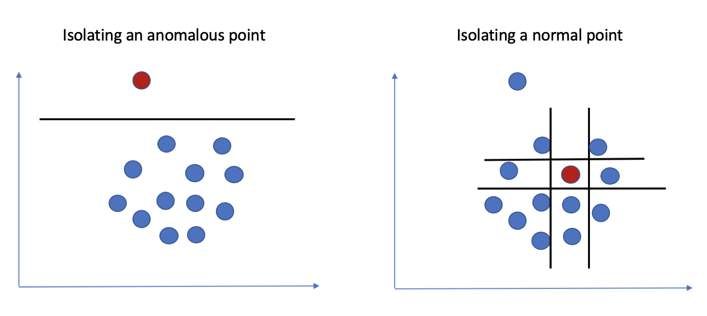
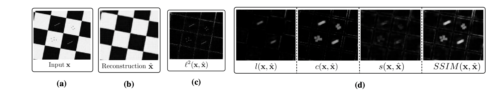

Earth observation satellites now play many important, even crucial roles around the world, both in the military and the
civil sector. Common commercial use cases are the improvement of agricultural yields or the monitoring of the Earth's
weather.
For example, they can be used to :
- Ice melting monitoring
- Fires and floods monitoring
- Human made structure in protected area monitoring
The following usage examples require the development of anomaly detection algorithms (or rather change detection for the above example)
- Fully automated image scanning: With a total area of about 510 million km2 it is not realistic to process such a large
amount of data with the use of human work in the process. Deep Learning algorithms have equal, if not better,
performance than human evaluation, while having the benefit to scale well better.
- Unsupervised (self-supervised) learning approach: A large part of machine learning algorithms relies on training
with labeled data, i.e. data on which we have a "ground truth" to train the algorithm with. However, it is very expensive, if
not impossible, to label satellite data by hand to obtain a training dataset. This is why unsupervised, or even
self-supervised algorithms are much better choices for this task

Sentinel-2 is a Copernicus Earth observation mission that acquires high spatial resolution (10 m to 60 m) optical images
of land and near-shore waters. The mission is currently a constellation of two satellites, Sentinel-2A and Sentinel-2B;
a third satellite, Sentinel-2C, is being planned for launch in 2024.
The "EuroSAT" is a open source dataset of Sentinel-2 satellite image covering 13 multi-spectral bands (in the visible,
near infrared and shortwave infrared part of the spectrum) and composed of 10 classes with a total of 27 000 labeled
(Forest, River, Sea&Lake...) and georeferenced images. The SimCLR algorithm does not use the data labels, however it
allows to evaluate the performance of the algorithm
Step 1 - SimCLR features extraction
SimCLR is a state of art self-supervised learning model that does not require any human-created labels.
As the name suggest, the model learns to supervise itself.
To do so we first apply 2 random augmentations (\(\tau\)) on a same original image (\(x\)) making \(x_i\) and \(x_j\).
And we let the model learn that these images still contain
the same visual information after a ConvNet Neural Network (CNN) and a projection head (MLP) forming \(z_i\) and \(z_j\).
This leads to the model learning a similar latent representation for the same objects.
The model is fitted against the “NT-Xent loss” define
as \(\ell_{i,j} = -\log
\frac{\exp(\mathrm{sim}( z_i, z_j)/\tau)}
{\sum_{k=1}^{2N} 1_{k \neq i}\exp(\mathrm{sim}(
z_i, z_k)/\tau)}\)
Step 2 - Isolation Forest Anomalie Detection
Once trained the latent space of SimCLR (representation / feature extraction) gives a good representation of the image
in terms of features.
It is then possible to differentiate different classes of images. Like for example a field or a forest

This feature extraction can also be used for anomaly detection with an Isolation Forest approach. If the representation
of a satellite image is too far from what can be found normally, it is a potential anomaly. For example a burning field
will be classified as an anomaly. At the end we get an anomaly score for each given chunk (64x64x13) of image, which
leads to the construction of a map of suspected anomaly on Earth.
Reconstruction-based method
